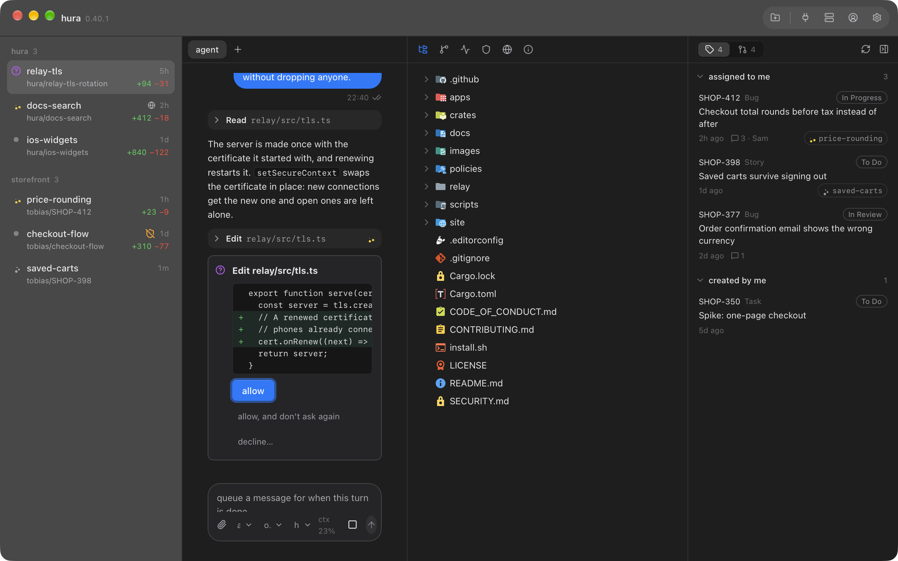
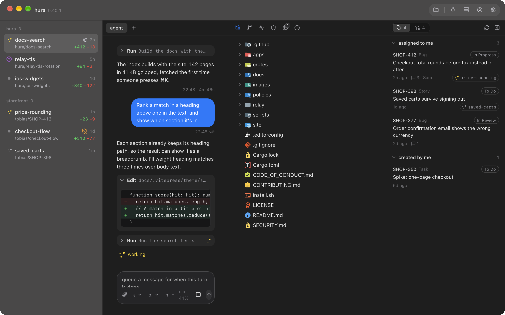
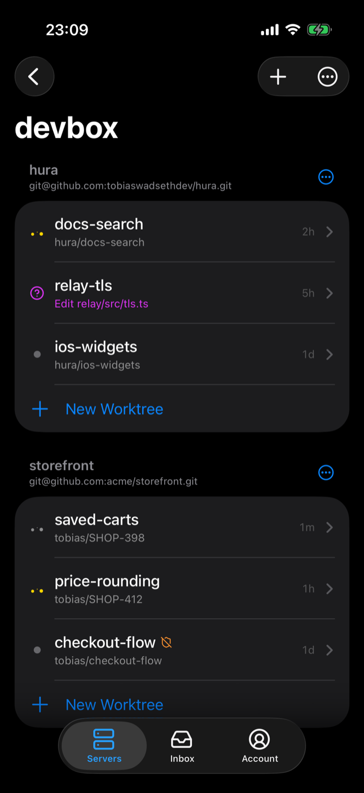
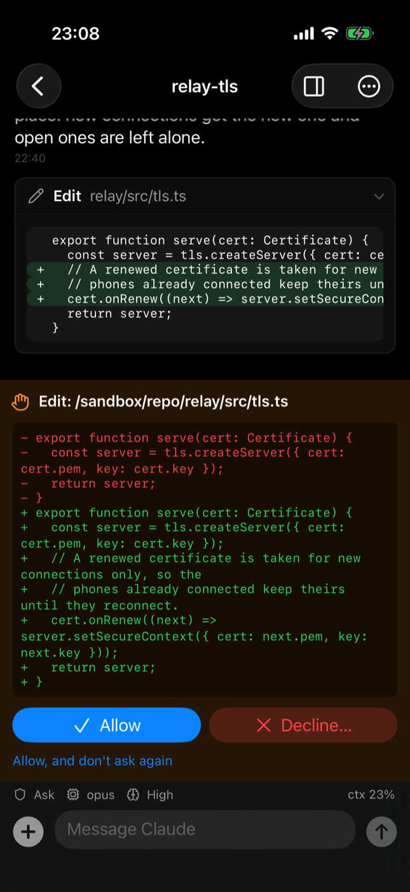
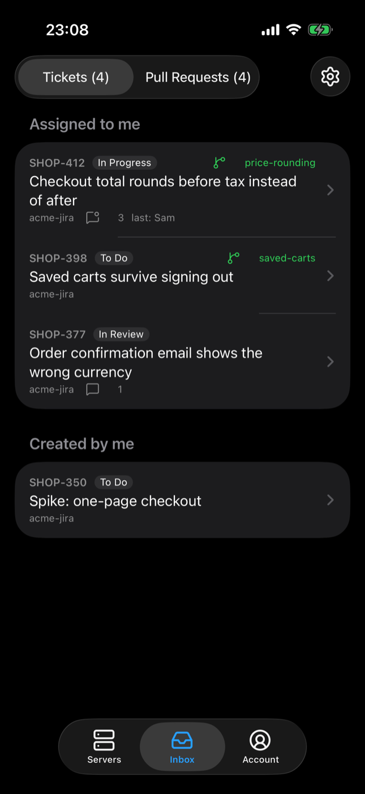

Run several coding agents at once.
Each in its own sandbox.
hura gives every agent session its own microVM, with network policy that names what it may reach. A desktop workspace and an iPhone app let you watch them, answer them, and review what they did.

One sandbox per session
Every session is a Docker Sandboxes microVM with its own Docker Engine. The agent clones and works on hura/<name>; your worktree is never handed over.
Credentials it never sees
A token stays on your machine. The sandbox runtime swaps it into requests to the hosts it is for, and the sandbox only ever holds a placeholder.
Isolation you can look at
Every allow and deny the runtime made is a pane. A denied endpoint is opened, or an open one blocked, with a right-click.
Desktop · macOS and Windows
A workspace, not a terminal multiplexer
Projects and their worktrees, a conversation with each agent drawn as a chat, every tool call as a card with its output or its diff, and permission prompts as buttons. Shells beside it, the working copy in a file tree, diffs with comments that go back to the agent, and git on the right.
- An OS notification the moment a session starts waiting on you
- Spend and rate-limit use per session, from the agent's own status line
- Tickets from GitHub, Azure DevOps and Jira, turned into sessions

iPhone
Your agents, in your pocket
The same workspace on the phone: sessions and their chats, answering a permission prompt from its notification, files, git, diffs and review, the events and policy panes, terminals and previews of the ports a session serves.
- A push the moment an agent asks something
- Tracker inbox synced through hura cloud
- Connects to your own hurad, nothing in between



hurad · Linux and macOS
The server where the sandboxes run
hurad runs on a Linux box with KVM (a workstation, a server on
the LAN, or WSL2 on the same laptop) or on a Mac. The apps connect to it;
it needs nothing from them. Everything the window does, it does on the
command line too.
curl -fsSL https://raw.githubusercontent.com/tobiaswadsethdev/hura/main/install.sh | sh
Checks the download against the release's SHA256SUMS, then runs hurad doctor to say what is missing.
$ hurad doctor [ ok ] sbx v0.47.0 (daemon v0.47.0) [ ok ] sbx checks 13 passed [ ok ] sbx policy deny-all [ ok ] sbx daemon sbx-daemon.service [ ok ] docker server 29.7.2 [ ok ] tmux tmux 3.7c [ ok ] linger enabled [ ok ] image hura-sandbox:latest built [ ok ] templates 1 loaded $ git push origin hura/readme-fix SUCCEEDS $ curl https://pastebin.com DENIED
Download
Version latest. Checksums for every file are in the release's SHA256SUMS.
macOS
The desktop app for Apple silicon, and hurad if this Mac runs the sessions too.
Desktop app (.dmg) hurad for macOS (.tar.gz)Windows
The desktop app. Pair it with hurad in WSL2 or on another machine.
Desktop app (installer) .msi for managed installsLinux
hurad for x86_64 and arm64. The desktop app builds from source.
hurad x86_64 (.tar.gz) hurad arm64 (.tar.gz) Build the desktop app